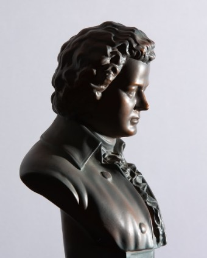

<!--
============================================
; Title: Assignment 2.4 - Routing in Action
; File Name: about.component.html
; Author: Professor Krasso
; Date: 5 June 2022
; Modified By: Seth Kerrey
; Description:
;   about component html for app
; Resources:
;   buwebdev, Professor Krasso, Bellevue University
===========================================
-->

<div class="container">

  <div class="row">

    <div class="col-sm-6">
      <figure>
        
        <!-- Photo by Benjamin Lehman from Pexels.com -->
        <figcaption class="figure-caption">Ludwig van Beethoven ~<br>Photo by Benjamin Lehman from Pexels.com</figcaption>
      </figure>
    </div>

    <div class="col-sm-6">
      <div>
        Ludwig van Beethoven, baptized in December 17th, 1170, was a German composer and pianist. His early years consisted of forging his craft. Then between 1802 to 1812 Beethoven’s musical career developed. Inspired by the styles of other composers at the time, Joseph Haydn and Wolfang Amadeus Mozart, Beethoven’s work was characterized as heroic. During this time, he also started to grow increasingly deaf. In the later years of his life his innovations grew in musical form and expression. He died on March 26th  1827 on March 26th, and to this day Beethoven remains of the most admired composers in the history of Western Music with his music ranking high in the most performed classical music.
      </div>
    </div>

  </div>
</div>
